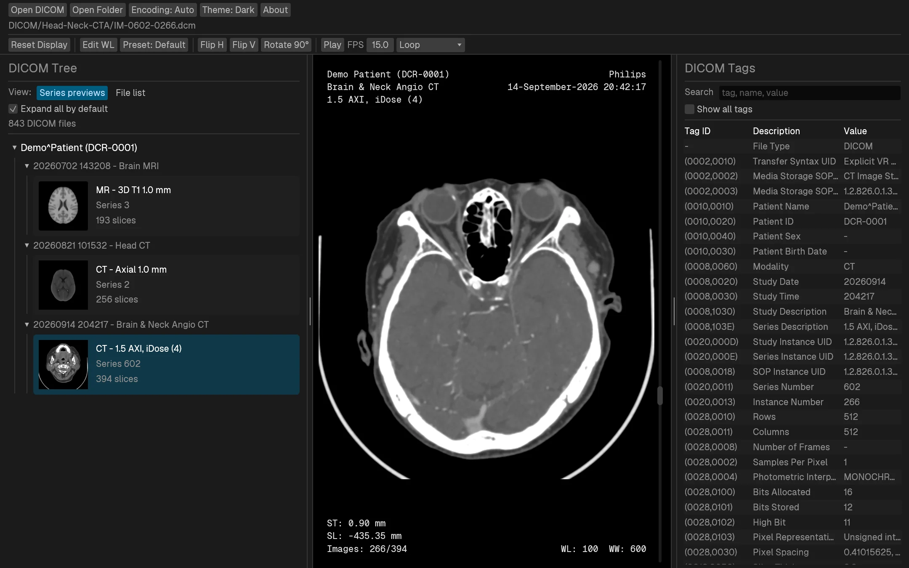
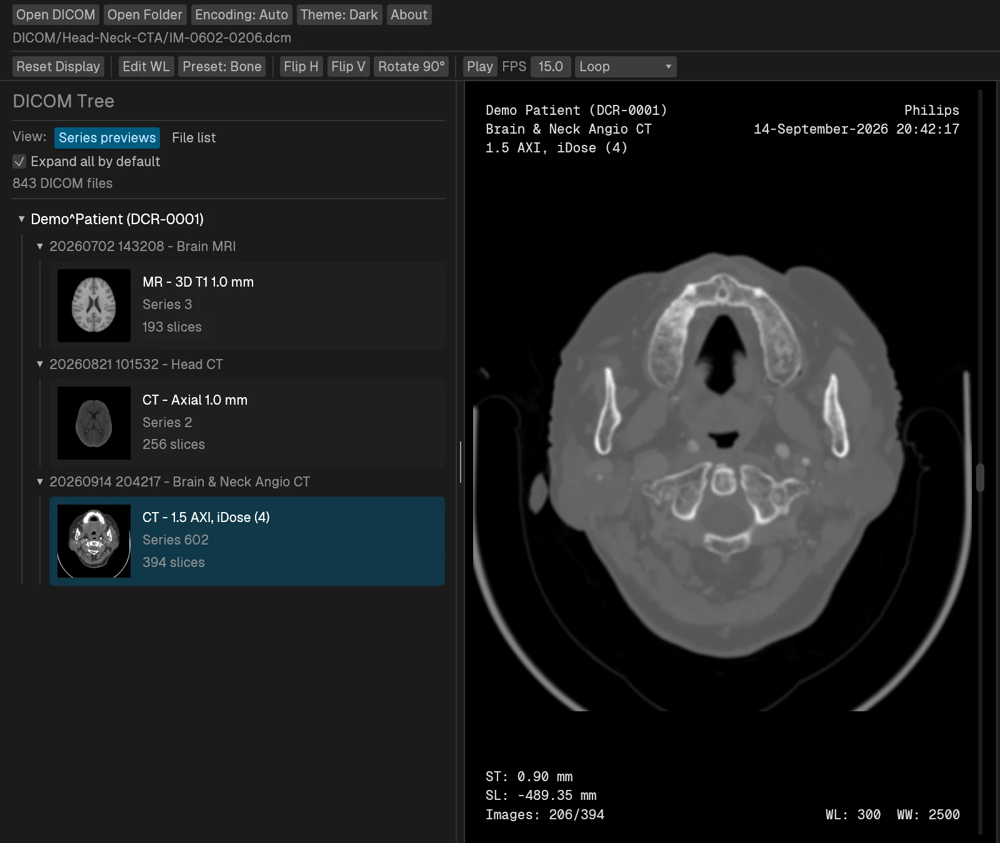
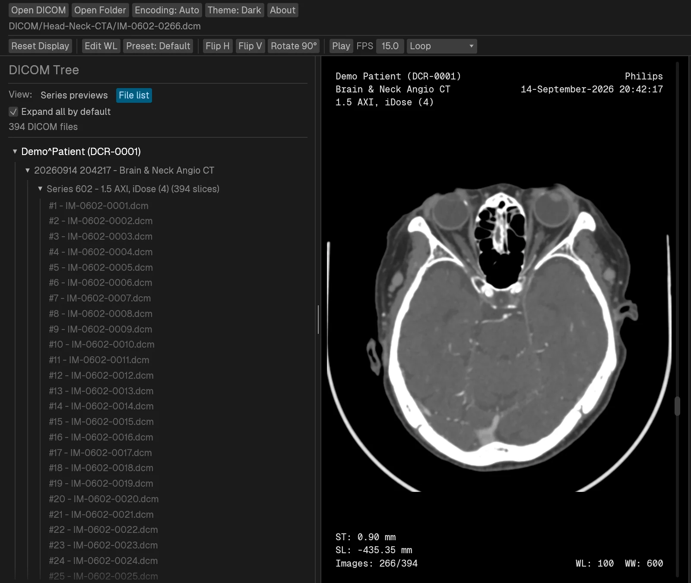
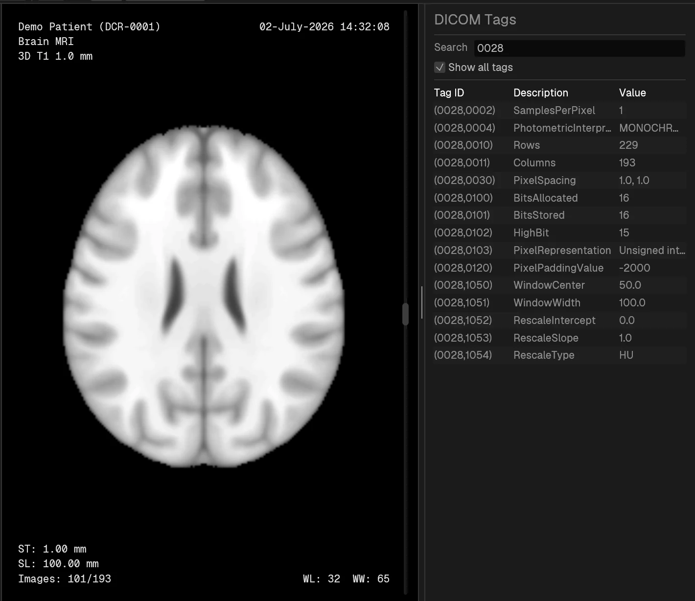
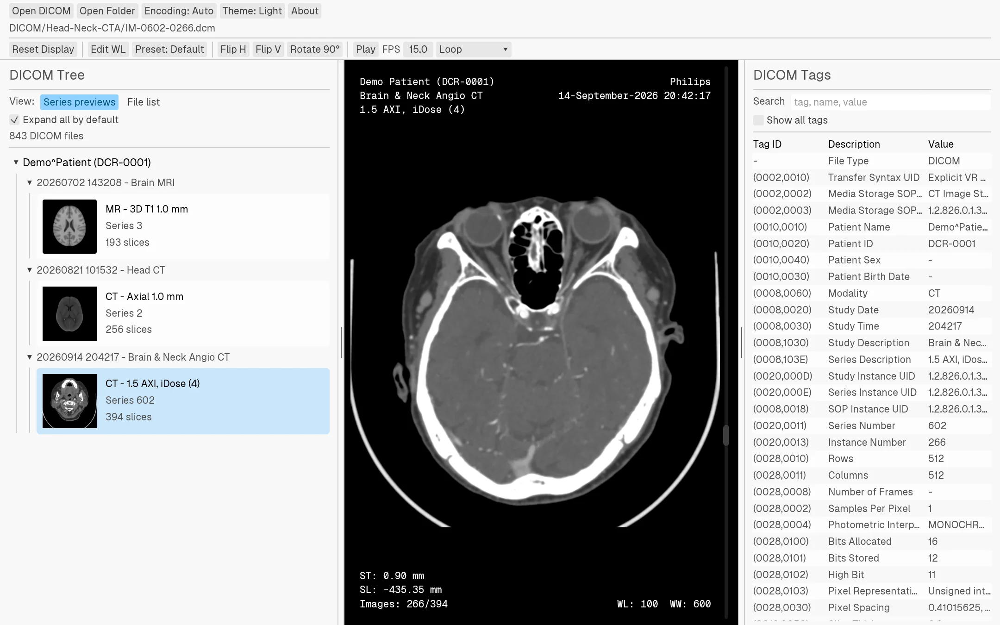

DICOM viewer · Linux · Windows
Open a folder of DICOM files and look at them.
Dicron is a native desktop viewer for local DICOM files. It scans folders, groups images by patient, study, and series, shows every tag, and lets you set window/level with a mouse drag.
Not a diagnostic medical device. Do not use it for clinical decisions.

Slice navigation
Scroll through a stack
One wheel notch moves one slice. Arrow keys step, Page Up and Page Down jump ten, Home and End go to either end. Autoplay runs at an adjustable frame rate with stop, loop, or ping-pong at the ends.
Clip: slices 170–283 of a 394-slice head and neck CTA.
Window / level
Presets, drags, or exact numbers
Drag horizontally for width and vertically for center. The Preset menu has lung, abdomen, bone, skull, and other common CT windows on keys 0–9. Edit WL takes exact values.


DICOM tree
Series cards or the full file list
Series previews show one thumbnail per series with its description, modality, and slice count. Each series reopens at the slice you last viewed. Switch to the file list when you need the individual filenames under Patient, Study, and Series.


Metadata
Search every tag
The tag panel starts with a curated set of fields. Turn on Show all tags and search by tag ID, name, or value. Known codes get readable labels while the raw value stays visible, and right-click copies a cell.


Themes
Light, dark, or follow the system
Drag the handle to compare. The image canvas stays black in both.

Also included
The rest of it
-
Drag and drop
Drop files or folders on the window. Folders are scanned recursively, including extensionless files.
-
Multi-frame images
Single-frame and multi-frame objects both open and step the same way.
-
Compressed pixel data
JPEG Baseline, JPEG Extended (12-bit), JPEG-LS, JPEG 2000 Lossless, and RLE Lossless.
-
Overlay planes
Overlay groups 6000–601E are drawn over the image, so overlay-only pages like dose reports are not blank.
-
Character sets
An Encoding menu with Auto, DICOM default, UTF-8, Korean (EUC-KR), and Japanese (Shift-JIS).
-
Zoom, pan, orient
Right-drag zooms, middle-drag pans, double-click fits. Flip and rotate keep the metadata overlays readable.
Controls
Keyboard and mouse
| ↑ ↓ or mouse wheel | Previous / next slice |
|---|---|
| Page Up Page Down | Move ten slices |
| Home End | First / last slice |
| 0–9 | Window presets. 0 restores the DICOM window, 1 fits the full value range |
| Drag horizontally | Window width |
| Drag vertically | Window center |
| Right-drag vertically | Zoom around the drag start point |
| Middle-drag | Pan |
| Double-click | Fit and center the image |
Download
Get Dicron
Builds are published on GitHub Releases.
On Linux, Dicron runs through X11/XWayland. You can also pass files or folders on the command line:
dicron /path/to/dicom-or-folder